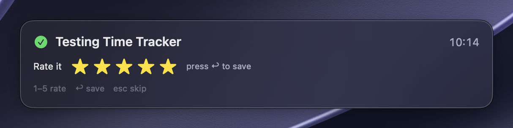

Track your time, reflect on your work — without leaving the keyboard.
A Mac menu bar time tracker you drive like Spotlight. One shortcut, type your task, press Return. Everything else is a slash command away.

Every command fits in a few keystrokes
Type / and the list filters as you type. Up/Down to choose, Tab to complete, Return to run. Esc always backs out.
any text | Start a session — or switch to a new task mid-session |
/stop/s | Stop, then jot what you did and rate it 1–5 |
/pause · /resume/p · /r | Freeze the clock for lunch or a call |
/edit/e | Rename the current session |
/nudge N/n | Remind me to start tracking every N minutes |
/check N/c | Ask "still on this?" every N minutes |
/history · /settings | Open the History or Settings window |
Stop, reflect, done
/stop flows into a two-step wrap-up: one line about what you got done, then a 1–5 rating with the number keys. Esc skips either.


Reminders are a dial, not a policy
The right amount of nagging depends on the task. Change it every time you switch, in two keystrokes.
Nudges keep you tracking
During your work hours, if no timer is running, you get a reminder with a "Start tracking" button. One at a time — ignored ones never pile up.
/n 60 deep-work day/n 15 the default/n 0 offCheck-ins keep the timer honest
While a session runs, an optional "still working on this?" catches the timer you forgot to stop.
/c 5 email triage/c 30 focused work/c 0 off (default)Your history, all in one window
/history opens every session grouped by day, with totals, search and a rating filter. Every field stays editable.

And the rest takes care of itself
Away detection
Mac slept or you walked off? On return, keep the time, subtract it, or end the session when you left.
Editable history
Sessions by day with totals, search and rating filter. Fix any field later, even start and end times.
Private iCloud sync
Stored locally and in your own private iCloud. Your Macs stay in sync; nothing is sent anywhere else.
One shortcut. That's the whole learning curve.
Install, enable Launch at login, press Cmd Shift Return.
Download for macOS